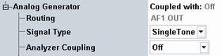

General Settings
The settings at the top of each generator tab select the type of the generated signal and couple the generator to a measurement.

General generator settings
Displays the destination of the generated audio signal. The destination can be an audio output connector or a speech encoder.
The destination is not configurable. It depends on the scenario and on the generator instance or on the used subinstrument.
Remote command:Not applicable
Selects the type of the generated audio signal: single tone, multitone or FFT noise.
Remote command:Selects the audio measurement to which the audio generator is coupled. The measurement instance is the same as the generator instance.
Remote command: